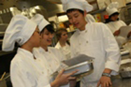
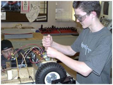
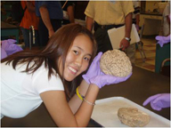
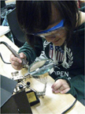
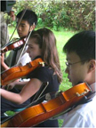
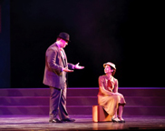
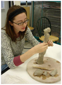

The Academies
The Bergen County Academies includes seven specialized high school programs; each emphasis is a different career path. Our graduates attend a wide range of universities and colleges throughout the nation and abroad. There are many opportunities for a student in one academy to interact with students from another. Students participate in interdisciplinary and class-wide projects as they take math, humanities, and world language courses together. Students can take part in independent study, numerous academic and skills competitions, cultural travel, and college residency experiences. Sports programs and after school activities supplement Academies life. Finally, to connect with the world of work, each student participates in an internship for academic credit during his or her senior year.
AAST
Academy for the Advancement of Science and Technology
Students applying to the Academy for Science and Technology should for science and a curiosity to explore modern scientific questions through a comprehensive, hands-on curriculum. The AAST core curriculum incorporates classes taken with other BCA students while emphasizing its own academy focus. For example, AAST students take multiple years of biology, chemistry and physics together with AEDT students while completing studies in chemical engineering, microscopy, organic chemistry and modern physics particular to AAST. Graduates from AAST are prepared to continue studies across a wide range of scientific disciplines or to pursue areas such as medicine, law and public policy which will continue to be informed by the sciences as the 21st century progresses. The following are a few of the highlights included in the AAST curriculum:
- During the freshmen year, AAST students learn the theories and techniques necessary to complete real-world investigations in nanotechnology, biotechnology, chemistry, microscopy and optics.
- AAST sophomores explore the practical and environmental considerations involved in scaling experiments from the small classroom laboratory to the large industrial production plant.
- Junior and Senior students extend their theoretical knowledge and laboratory skills to the study of organic chemistry and can choose among several AP or IB science electives. Throughout the curriculum, students are encouraged to find originalanswers to modern research challenges using the stateof-the-art facilities available on campus.
Many of the AAST faculty have years of industrial experience and several hold doctorates in their area of expertise. Additionally, through our Senior Experience program and other industrial or academic collaborations, AAST students have several opportunities to interact with outside experts from institutions including Columbia, BASF, Princeton, Stevens and the American Museum of Natural History to name just a few. Whether they pursue further science or choose another path, AAST graduates possess the knowledge, skills and experience to succeed in a number of fields.

ABF
Academy for Business and Finance (International Baccalaureate)
This Academy provides an introduction to the world of business in addition to a comprehensive academic program. Students typically have a strong aptitude for mathematics, possess advanced writing skills, and are interested in business, finance, marketing, and economics. Business principles are taught in multiple, high-level core courses which incorporate topics such as: the global business environment, management, marketing, finance, economics and entrepreneurship. ABF students often become involved in a variety of national and international business and economic competitions such as the High- School Federal Reserve Bank Challenge and the Fairleigh Dickinson University Business Idea program. They also participate in nationally- recognized business organizations such as DECA (an association of marketing students). ABF has incorporated an emphasis on a global perspective. The driving force behind this global component is the integration of the International Baccalaureate curriculum to an already rigorous course of study. The IB Diploma Program, in which all ABF 11th and 12th graders enroll, is an internationally recognized degree program administered by the International Baccalaureate Organization in Geneva, Switzerland. To earn the IB diploma, students must complete a two year sequence of courses in humanities, math, and science. In addition, ABF students are required to complete a senior thesis and a unique class on interdisciplinary analysis, as well as requirements in the arts, community service, and athletics. A unique feature of our Academy is the Financial Markets Lab. Our lab is equipped with Bloomberg technology, a resource utilized by finance professionals worldwide; it enables our students to conduct economic and financial research and analysis using real-time economic and market data and sophisticated analytic tools. Our proximity to New York City offers our students opportunities to visit some of the world's leading financial institutions. Furthermore, our global exchange program offers students the opportunity to gain exposure to the international business community.
ACAHA
Academy for Culinary Arts and Hospitality Administration
ACAHA students have a strong interest and passion for culinary arts as well as hospitality administration. This academy is ideal for those who would like to pursue a career in either field, or who are interested in the subject material and seek a well rounded high school experience that offers an honors-level core curriculum augmented by elective options in all facets of hospitality, management, customer service, entrepreneurship, and advanced culinary / pastry arts. Students train in a sophisticated culinary facility that rivals many professional restaurant sites. The curriculum includes foundations of hospitality and restaurant management. Electives in AP Micro and Macro Economics are emphasized. The course of study leads to certification from the National Restaurant Association Education Foundation, which can lead to hospitality scholarship opportunities. Articulation agreements with universities enable students to receive some college credit. For students interested in a career in hospitality management or the culinary arts, ACAHA offers the best possible preparation for college hospitality programs such as Cornell University's School of Hotel Administration. While at the Academies, ACAHA seniors have interned at Restaurant Daniel, the Loews Regency Hotel and the New York Hilton.
AEDT
Academy for Engineering Design Technology
The Academy for Engineering and Design Technology (AEDT) was developed as an extension of AAST with specific concentration in the engineering sciences, including design technology, computer science, manufacturing, electronics, and biomedical engineering. Students in this academy have a concentration in engineering and design courses and focus on skills which are generally useful in any engineering curriculum. Students are drawn to the Engineering Academy because they like to create, build, or reverse-engineer things. They have the opportunity to do this in state-of-the-art classrooms and laboratories. Projects include product development, civil or architectural designs, robotic competitions, and much more. Students must have a strong desire to solve problems using math, science, and technology. They should like to work with their hands, and apply their creativity to engineering. Organizational skills, such as maintaining computer files, keeping project journals and building portfolios are needed. Communication skills are a plus. AEDT focuses on general engineering disciplines and prepares students for entrance into college engineering programs. While not everyone in this academy will pursue engineering, those that choose to do so have a solid background in the field and are likely to successfully master college courses. Students are also prepared to pursue careers in the technical aspects of business or law. Articulation agreements with universities enable AEDT students to receive college credit for some of the core courses taken in this program.
AMST
Academy for Medical Science Technology
The Academy for Medical Science Technology's program of study is a system-based approach to medicine that allows students to learn the basic sciences in an integrated format. Students take rigorous academic requirements in mathematics, humanities, foreign language and the arts. Transdisciplinary class-wide projects, from ninth through eleventh grade, develop teamwork, communication and presentation skills promotion an integrated, multidimensional approach to learning. All students complete core areas, complemented by required units in humanities, creative cultural arts, physical education, health, projects, and also choose electives each trimester. All academic courses are taught at the honors level or above. The Research programs at the Bergen County Academies operate within highly sophisticated, sate-of-the-art laboratories that have been designed and equipped to allow exploration within a variety of scientific disciplines. The labs are functional, professional entities, not normally found in a high school setting. They include cell and molecular biology, nanotechnology, microscopy and a variety of engineering programs. Many of our students have won significant national and international awards, and some have been able to publish their finding in professional journals.The Research programs at the Bergen County Academies operate within highly sophisticated, sate-of-the-art laboratories that have been designed and equipped to allow exploration within a variety of scientific disciplines. The labs are functional, professional entities, not normally found in a high school setting. They include cell and molecular biology, nanotechnology, microscopy and a variety of engineering programs. Many of our students have won significant national and international awards, and some have been able to publish their finding in professional journals.
ATCS
Academy for Technology and Computer Science
This program is ideal for students who have a strong interest in technology and computer science. The Academy for Technology and Computer Science offers a curriculum that focuses on computer architecture, computer programming, computer technologies, and networking. Partnerships with leading corporations such as Dell, Oracle, Microsoft, Google, Hewlett-Packard, and IBM give our students access to curricular resources that other schools cannot approach. ATCS prepares students for industry certifications, including Microsoft and Java. Students may also qualify for advanced placement in college by enrolling in the AP Computer Science course as well as other courses such as data structures. Because of their strong backgrounds in computer science, ATCS students have competed successfully in the following programming competitions: The IBM Mainframe Contest, The International Computer Science Olympiad, the New Jersey Institute of Technology Programming Competition, the Oracle Programming Competition, the Future Business Leaders of America Competition, and the American Computer Science League. An ATCS student will be well prepared for a college major such as computer science, computer engineering, or information systems. ATCS students who decide not to pursue computer-related careers in the future will find that the technical skills they have acquired through the academy's curriculum will prove to be useful in a number of other fields.
AVPA
Academy for Visual and Performing Arts
Music
Students in the Academy for Visual and Performing Arts - Music (AVPA-M) have an outstanding ability in music and are the strongest musicians in their communities. Students in this program study an academic, honors-level college preparatory curriculum with a focus in music. Ninth graders begin the program by enhancing their keyboard / piano skills in Digital Keyboarding. They also take Musicianship. In this exciting methods course, students learn woodwind, brass, string and percussion instruments. Conducting is also an important part of the course, as is rhythm dictation and score reading/interpretation. The course ends with a special project in the music technology field. Tenth graders learn current technological and compositional techniques in Electronic Music Synthesis. Students work with state-of-the-art software such as Finale and Pro Tools. The course culminates with each student completing a formal composition. The AVPA-M program ensures a rounded arts education with Music & Society: a course that teaches the evolution of the style with the corresponding art and sociopolitical trends. In eleventh grade, students take a rigorous AP course in music theory and may earn college credit: AP (Advanced Placement) Music Theory in the Digital Age. They study music theory at the college-level, including harmonic analysis, counterpoint, voice leading and ear training. An exhibition of students' digital compositions is also part of the curriculum. In twelfth grade, students go beyond the AP theory curriculum in Advanced Problems in Music Theory & Technology. Here, students delve into augmented sixth and Neapolitan chords, fugal composition techniques, and analysis of twentiethcentury music. Twelfth graders complete the program with Senior Music and Media Seminar, where they present a lecturerecital or build a musical instrument! Finally, each AVPA-M student is required to participate in 2 trimesters of a performing music course each year (band, orchestra, choir or ensemble). The AVPA-M program is not a conservatory or a full-time performing arts program- we offer a college preparatory, academic honors program, with a focus in music.
Theatre Arts
The AVPA theatre arts concentration is a rigorous training program for students interested in pursuing a college major in theatre or film leading to a career in some aspect of those fields. Core courses include sequences in acting, voice and speech, theatre history, dramatic writing and directing. In addition to studying with faculty members (all of whom have professional training and experience) AVPA theatre students work with industry professionals in the study of dance, musical theatre, and the business of theatre. Students are required to participate, either as performers or technicians, in two out of three major theatrical productions each year. Our goal is to nurture creativity and imagination, develop skills and discipline and emphasize process. Rather than provide students with a single technique we introduce young artists to a variety of methods (i.e. mask work, viewpoints, Stanislavsky technique), encouraging them to learn to work in ways most productive for their individual growth. Theatre concentration students will be well prepared to audition for college and conservatory Theatre Arts programs (BA and BFA). AVPA theatre students, because of their course of study, will be ready for almost any college major or career path encountered in the 21st Century. Students acquire a deep understanding of multiple perspectives and world views and a keen ear for the subtleties and nuances in language, music and movement. Moreover, they have enhanced and developed imaginative capacity, flexible ways of thinking, self-discipline, and sophisticated presentation skills.
Visual Arts
The visual arts concentration is a college preparatory program specializing in the latest advances in the arts, including 2D and 3D animation, print/digital publishing, and multi-media. Students study every essential aspect of the visual arts field through immersion in a curriculum that embraces these new technologies, while still emphasizing traditional skills and principles of art and design. While blending art and technology, students have the freedom to explore their strongest interests. Some of the latest areas of research include development with Maya 3D modeling software, Unity game development software, Oculus Rift virtual reality headsets, and Arduino programming to create immersive, virtual reality experiences in conjunction with Ellis Island and the National Parks Service. The curriculum is driven by computer graphics instruction and imaging technologies. Core classes specifically designed for Visual Students include an introduction to visual arts and graphic communication, design and production techniques, publishing, and digital imaging. Students are required to build and maintain a portfolio that exhibits a high degree of creativity as well as technical proficiency. Works in the portfolio range from traditional drawing and painting to photography, print and web design, computer animation and gaming, and video. Students have access to internships in literally hundreds of production houses that support the art and imaging needs of prestigious metro area businesses. They also have the opportunity to achieve certification with Adobe software, including InDesign, PhotoShop, Illustrator, Flash, Dreamweaver, and Premiere. The admissions process includes a portfolio review. We want to see where students' interests lie and get a feel about how passionate they are about their art. All types of art are acceptable, both traditional and non-traditional, from paintings, drawings, and sculpture, to computer graphics, animation, web development, photography, video, etc.
